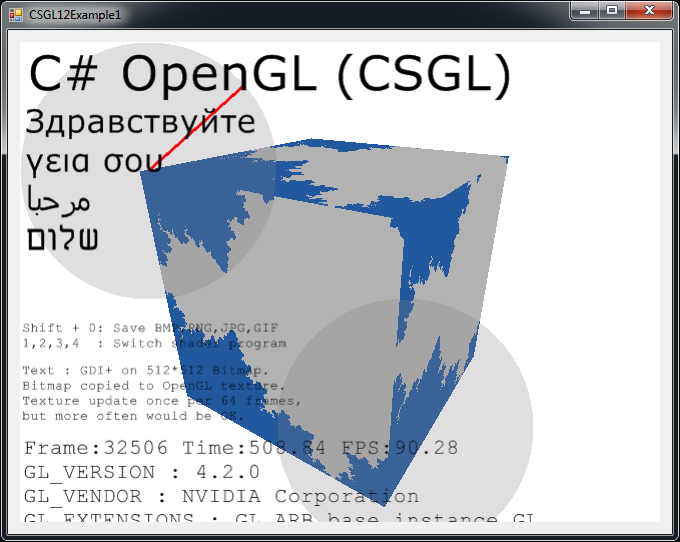

C# OpenGL interfaţă
pentru Windows sistem de operare
Colin Fahey

CSGL12Control pe o Form, se afişează un "fractal" Pixel Shader program şi GDI+ desen copiat la o textură

Două instanţe CSGL12Control pe o Form, arătând Pixel Shader programe şi texturi

A 3D avatar care roams spaţiul de lucru şi pot fi mutate cu cursorul
1. Software
Această versiune a acestui document trebuie să fie incluse în software-ul "CSGL12". Dacă nu găsiţi software-ului, atunci vă rugăm să mergeţi la următorul site Web pentru a descărca software-ul:
http://colinfahey.com.
2. Toate C# de cod de computer în C# OpenGL interfaţă (CSGL12) este în "domeniul public"
I-am scris tot de la C# cod de computer, în C# OpenGL interfaţă (CSGL12).
Declar toate cele C# cod de computer, în C# OpenGL interfaţă (CSGL12) pentru a fi în "domeniul public."
Prin urmare, de cod de computer poate fi folosit pentru orice scop (comerciale sau private), fără plată, fără restricţii, fără obligaţii, şi fără recunoaşterea original autor.
Acest cod poate fi modificat, sau porţiuni refolosite, fără restricţii, şi fără obligaţii, şi fără recunoaşterea original autor.
De exemplu programe includ o cantitate mică de cod de computer (în special, "shader computer code) scris de către alte persoane." O astfel de cod nu este în sine şi de interfaţă poate fi trivially eliminat. O astfel de cod este doar pentru a demonstra simplitatea de utilizare a interfeţei, pentru a crea şi de a folosi "shader" programe.
3. Introducere
"CSGL12" este o colecţie de fişiere de cod de computer C# care pune în aplicare o interfaţă grafică pentru OpenGL bibliotecă (inclusiv toate extensiile de OpenGL până în anul 2007) pentru Windows sistem de operare.
C# de cod de computer fişiere în "CSGL12" colecţie face uşor să adăugaţi OpenGL tragere la orice C# / .NET software-ul cu un "Form" (un exemplu de "System.Windows.Forms.Form").
De "CSGL12" o colecţie de fişiere de cod de computer include un fişier numit "CSGL12Control.cs", care defineşte o clasă numit "CSGL12Control", provenite de la "System.Windows.Forms.Control". Fiecare instanţă a "CSGL12Control" independent OpenGL reprezinta o zona de desen. Este foarte uşor să adăugaţi mai multe instanţe de CSGL12Control la un Form (un exemplu de System.Windows.Forms.Form).
4. Caracteristici şi cerinţe de "CSGL12"
Codul este numai pentru sistemele de operare care Windows sprijini .NET 2.0 Framework (Windows 2000, Windows XP, Windows Vista, Windows 7)
Acest cod poate fi compilat folosind "Microsoft Visual C# 2008 Express Edition" (gratuit compilator), sau ceva similar C# compilatoare.
Codul necesită a fi construit cu "[X] Allow unsafe code" construi opţiune selectate astfel încât optimizat imagine copierea datelor funcţii pot fi utilizate. Dacă sunteţi un expert C# programator va trebui să poată identifica cu uşurinţă porţiuni din C# cod care necesită "unsafe" opţiune şi dacă le dezactivaţi dorit sau necesar. Copierea datelor imaginii este de 10 ori mai repede folosind "unsafe" cod decât de alternativă, şi din acest motiv astfel de cod este utilizat. Dacă vă construiţi un DLL care conţine toate "unsafe" din cod, apoi un proiect care utilizează DLL care nu are nevoie de a fi construit cu "unsafe" opţiune, şi, astfel încât să puteţi trage concluzia că lipsa de "unsafe" opţiune într-un proiect nu implică nici un extra de siguranţă (pentru că numeroase DLL fişierele care sunt utilizate implicit sau explicit de program conţine "nesigure" code).
Acest cod nu poate fi întocmit şi folosit de către oricare din următoarele:
Microsoft Visual C# 2008 Express Edition
Microsoft Visual Studio 2008
Microsoft .NET 3.5 SDK
SharpDevelop
Mono Project
Codul oferă cele mai multe extensii OpenGL (prin anul 2007), inclusiv "vertex shaders" şi "pixel shaders".
Codul prevede 1570 funcţii legate de OpenGL:
336 GL functions
51 GLU functions
19 WGL functions
1164 extensions
Codul oferă unele variante alternative de a 1570 cu funcţii diferite tipuri parametru, pentru comoditate.
Codul defineşte mai mult decât 3244 constante pentru OpenGL.
Codul oferă posibilitatea de a avea mai multe contexte OpenGL desen, toate animating independent, cu privire la orice "Form".
Făcând clic pe un "CSGL12Control" oferă "intrare se concentreze," care să permită ulterior tastatură şi mouse-ul roata de intrare. Cursor clicuri şi mişcările sunt primite atunci când cursorul este în dreptunghiular zona de o instanţă a "CSGL12Control".
Acest cod include funcţii pentru a demonstra cum se face unele comune OpenGL sarcini în C# şi .NET.
Codul toate listele OpenGL constantele şi funcţii în ordine alfabetică în "class GL" în "GL.cs", a face mai uşor de a determina daca o constantă sau funcţia lipseşte (care este puţin probabil, în afară de prelungiri a adoptat, în urma anul 2007).
De exemplu, programe arată cum să faceţi GDI+ de desen la o Bitmap, şi atunci cum să copie că Bitmap la o OpenGL textură.
Acest lucru permite textul GDI+ de desen şi alte capacităţi de a contribui la o scena OpenGL.
De GDI+ Bitmap pot fi actualizate şi uploadat de a OpenGL o textura la fel de des ca, o dată pe OpenGL interval.
De exemplu, arată cât de programe de a alege dintre mai multe "pixel shader programs" în timp ce programul se execută.
De exemplu, arată cât de programe pentru a scrie OpenGL tampon pentru fişiere imagine (JPG, BMP, GIF, PNG).
Apăsaţi Shift + 0 (Shift-zero) pentru a scrie OpenGL tampon pentru fişiere imagine.
În exemplul de cod arată cum compilarea "GL.cs" în DLL la un fişier, apoi adăugând că DLL fişier într-un alt proiect, poate preveni Microsoft cod editori (de exemplu, Microsoft Visual C# 2008 Express Edition, etc) cu "IntelliSense" (context-sensibile cod finalizarea) de a deveni în mod frecvent şi persistent răspunde (în mod repetat, pentru întreruperea multe secunde, ceea ce face ca editor complet inutilizabil). După ce fişierul "GL.cs" direct incluse în orice proiect în curs de editare de către un editor de cod Microsoft nu este practic, cu excepţia cazului în care o persoană este dispus să suporte lentoarea din editor. Această problemă a afectat Microsoft Visual Studio 2003, 2005, 2008, şi vor afecta, probabil, de 2010 versiune, de asemenea.
De exemplu, codul demonstrează utilizarea de mai multe instanţe de "CSGL12Control" pe o "Form".
În exemplul de cod include cod pentru a face o 3D "avatar" care roams spaţiul de lucru al Windows.
5. Exemplu de programe incluse cu "CSGL12"
5.1 "CSGL12DLL"
Proiectul numit "CSGL12DLL" produce un DLL fişier numit "CSGL12DLL.dll" care conţine "class GL" (definite în C# fişier "GL.cs").
Punerea în "class GL" la un DLL fişier, apoi, folosind ca DLL în alte proiecte, care utilizează "class GL", ajută la o extremă evita problema cu toate Microsoft cod editori cu IntelliSense facilitate. Folosind C# fişier GL.cs direct într-un proiect ar duce la orice editor de cod Microsoft cu IntelliSense caracteristică pentru a răspunde şi a devenit complet inutilizabil aproape continuu, ca urmare a ineficienţei de IntelliSense facilitate (şi de faptul că, evident, blocuri IntelliSense principalele program şirul de editor ).
Dacă folosiţi un editor de cod C#, care nu este produs de Microsoft (de exemplu, "SharpDevelop", "MonoDevelop", etc), atunci puteţi pur şi simplu să includă fişier "GL.cs" direct in proiecte, şi v-ar fi puţin probabil să câştige nici un beneficiu de la folosirea "CSGL12DLL.dll".
5.2 "CSGL12Control"
Proiectul numit "CSGL12Control" produce un DLL fişier numit "CSGL12Control.dll" care conţine "class CSGL12Control" (definite în C# fişier "CSGL12Control.cs").
Punerea în "class CSGL12Control" la un fişier DLL, care permite "Control" (de exemplu, o clasă derivată din "System.Windows.Forms.Control") pentru a fi adăugate la "Toolbox" de Microsoft Visual C# 2008 Express Edition (şi altele similare C# editori). Având "CSGL12Control" în "Toolbox" face mai uşor pentru o persoană pentru a adăuga un exemplu de "CSGL12Control" la un "Form" în "Designer" (de exemplu, o persoană poate pur şi simplu utiliza cursorul pentru a selecta şi trageţi-o instanţă a "CSGL12Control" de la "Toolbox" la un "Form").
De "CSGL12Control" obiect gestionează o OpenGL desen context. Mai multe instanţe de "CSGL12Control" pot coexista pe o "Form".
5.3 "CSGL12Example1"
Proiectul numit "CSGL12Example1" produce un fişier de program executabil (EXE) numit "CSGL12Example1.exe". Programul utilizează "CSGL12DLL.dll" şi "CSGL12Control.dll" pentru a afişa o instanţă a CSGL12Control şi să tragă un cub folosind OpenGL.
Programul demonstrează utilizarea de patru diferite "pixel shaders" "(fractal, caramida, lemn," şi "caricatură)."
Programul de asemenea demonstrează utilizarea de "GDI+", un desen .NET bibliotecă, pentru a atrage şi alte forme de tip text la un "Bitmap" obiect (un obiect "GDI+"), şi apoi copiaţi imaginea de date de la care "Bitmap" la un "texture" în OpenGL, permiţând astfel o imagine a atras de "GDI+" pentru a apărea în OpenGL desen. Această capacitate este foarte util pentru că OpenGL îi lipsesc multe din caracteristicile de desen 2D găsit în "GDI+" şi similare 2D desen libaries.
5.4 "CSGL12Example2"
Proiectul numit "CSGL12Example2" produce un fişier de program executabil (EXE) numit "CSGL12Example2.exe". Programul utilizează "CSGL12DLL.dll" şi "CSGL12Control.dll" pentru a afişa două instanţe de CSGL12Control, fiecare dintre care atrage un cub folosind OpenGL.
Programul are o "SplitContainer" "Control" pe "Form". Fiecare din cele două zone ale "SplitContainer" conţine un exemplu de CSGL12Control. Astfel, o persoană poate regla poziţia de a împărţi între cele două instanţe ale CSGL12Control. Acest lucru demonstrează flexibilitatea de a CSGL12Control.
Unul din cazurile de CSGL12Control de evenimente pentru a trimite un set de eveniment manipulanţii într-o instanţă de "CSGL12Example2Handler1.cs", care utilizează acelaşi cod ca "CSGL12Example1Handler.cs" în "CSGL12Example1" exemplu de proiect. De aceea, una dintre instanţele CSGL12Control atrage un cub cu un "pixel shader" selectate din rândul patru "pixel shaders" disponibile.
Celelalte exemplu CSGL12Control de evenimente pentru a trimite un set de eveniment manipulanţii într-o instanţă de "CSGL12Example2Handler2.cs", care atrage un cub folosind o textură imagine (sau un model "checkerboard" în cazul în care un fişier imagine este numit "image.jpg" nu a fost găsit).
5.5 "CSGL12Avatar"
Proiectul numit "CSGL12Avatar" produce un fişier de program executabil (EXE) numit "CSGL12Avatar.exe". Programul utilizează "CSGL12DLL.dll" şi "CSGL12Control.dll" de a trage un cub folosind OpenGL pe la "Form" fără de frontieră, cu culori pe bază de transparenţă a permis, de a trage o 3D "avatar" care roams de Windows zona de birou.
În mişcare avatar se poate face clic şi a târât-o locaţie nouă cu ajutorul cursorului. Dublu-clic pe avatar va face dispărea. Desi codul de doar atrage un cub, OpenGL pot fi utilizate pentru a atrage alte lucruri.
Mai multe instanţe de la "avatar" program poate fi iniţiat. Astfel, multe instanţe independente "avatar" poate călători în acelaşi timp de Windows desktop. Acest lucru este amuzant. Un expert C# programator ar putea să se bucure de a găsi modalităţi de a coordona activitatea de "avatar" multe astfel de cazuri.
Din păcate, rata la care a Window obiect cu transparenţă este actualizat de pe ecran este cu mult mai lent decât ritmul în care se poate trage OpenGL. "Avatarul" doar actualizările de 10 ori pe secundă. Nu ştiu dacă acest lucru poate fi imbunatatit.
5.6 "CSGL12BuiltExecutableExamplesForReference"
Directorul numit "CSGL12BuiltExecutableExamplesForReference" conţine DLL fişiere şi fişierele EXE produse de toate de exemplu proiecte. Aceste fişiere sunt oferite ca un referinţă, astfel încât fişierele pot fi testate imediat, chiar dacă o persoană care nu are capacitatea de a compila în diverse proiecte de la condiţia C# cod.
5.7 "CSGL12UsefulCode"
Directorul C# numit "CSGL12UsefulCode" conţine fişiere care ar putea fi util pentru cei care doresc să facă operaţiuni de desen obişnuit cu OpenGL. Directorul include, de asemenea, DLL fişiere "CSGL12DLL.dll" şi "CSGL12Control.dll" pentru comoditate.
Cod în care directorul de class defineşte diferite tipuri, cum ar fi Color4f, Vector3f, Matrix4x4f, Triangle, Mesh, ImageData, Texture, ShaderProgram, etc Codul este destul de eficient, dar codul este destinat numai pentru a inspira pe oameni să îşi dezvolte propriile implementari.
6. CSGL12 fişiere
De "CSGL12" o colecţie de fişiere C# cod de computer include imagini se arată în graficul următor:

De "CSGL12" o colecţie de fişiere C# cod de computer include imagini prezentate în această schemă.
"CSGL12" de software-ul include, de asemenea, proiecte pentru a crea cele două DLL fişiere ("CSGL12DLL.dll" şi "CSGL12Control.dll") se arată în graficul. Aceste două DLL fişierele pot fi create pentru a face mai convenabil pentru a crea programe care utilizează OpenGL, dar este posibil, de asemenea, să creeze programe care utilizează numai în C# fişierele direct.
7. "namespace CSGL12" şi "class" tipuri
De "CSGL12" colecţie de C# cod de computer fişierele defineşte "namespace CSGL12" şi "class" tipuri se arată în graficul următor:

De "CSGL12" colecţie de C# cod de computer fişierele defineşte "namespace CSGL12" şi "class" tipuri demonstrat în această schemă.
Un program care nu OpenGL desen pot fi create utilizând numai "class GL" (folosind C# fişier GL.cs direct, sau prin utilizarea de DLL fişier CSGL12DLL.dll care conţine, de asemenea, "class GL"). Cu toate acestea, folosind "class CSGL12Control" (prin utilizarea C# fişier CSGL12Control.cs direct, sau prin utilizarea de DLL fişier CSGL12Control.dll care conţine, de asemenea, "class CSGL12Control") face adăugând OpenGL tragere la un Form (System.Windows.Forms.Form) simplă şi comodă.
De C# clase Color4f, CSGL12Support, ImageData, ..., în partea de jos a diagramei sunt oferite doar pentru comoditate. Aceste clase de al face mai uşor de a crea programe care trage cu ajutorul OpenGL. Cu toate acestea, s-ar putea să aibă deja clase care efectuează operaţiuni în aceste clase, sau s-ar putea alege pentru a crea clase similare, care efectuează operaţiuni de diferit sau mai eficient. Aceste cursuri sunt oferite ca exemple de un anumit cod de design si implementare.
8. Folosind un singur "CSGL12Control" pe o System.Windows.Forms.Form
8.1 Programul de structura
Următoarea diagramă arată cum un program cu un System.Windows.Forms.Form se poate utiliza un singur "CSGL12Control" să faci cu tragere OpenGL. Diagrama arată CSGL12 diferite fişiere de utilizat pentru a construi acest program.

Un program care utilizează un singur "CSGL12Control" pe o System.Windows.Forms.Form
8.2 Utilizarea Microsoft Visual C# pentru a crea acest program
(1) Start Microsoft Visual C#.
(2) În meniu, selectaţi "File" -> "New Project...".
(3) În "New Project" caseta de dialog care apare, selectaţi "Windows Forms Application", şi alegeţi un nume pentru acest program, şi apăsaţi "OK".
Imediat (4) salva "Solution" prin selectarea "File" -> "Save All". O caseta de dialog cu titlul "Save Project" va apărea, permiţându-vă să setaţi numele proiectului, directorul de locaţie, şi "soluţia" nume pentru acest proiect. Amintiţi-vă de directorul de locaţie, astfel încât să vă sunt gata pentru următoarea instruire. Apăsaţi pe buton pentru a salva "Save" proiectului.
(5) Copiaţi toate fişierele din directorul "CSGL12UsefulCode" în "CSGL12" software-ul în directorul care conţine fişierele cod sursă din nou proiect (de exemplu, directorul care conţine fişierele "Form1.cs", "Form1.Designer.cs", "Program.cs", etc), astfel încât fişierele "CSGL12DLL.dll", "CSGL12Control.dll", "Color4f.cs" , "CSGL12Support.cs", etc, sunt alături de noi fişiere proiect "Form1.cs", etc
(6) În Microsoft Visual C#, adăugaţi "CSGL12" C# fisiere de proiect. În meniu, selectaţi "Project" -> "Add Existing Item...", şi în "Add Existing Item" caseta de dialog, selectaţi din C# toate fişierele de pe CSGL12 software ("Color4f.cs", "CSGL12Support.cs", "ImageData.cs", ...).
(7) În Microsoft Visual C#, adăugaţi "trimiteri" la DLL fişiere "CSGL12DLL.dll" şi "CSGL12Control.dll". În meniu, selectaţi "Project" -> "Add Reference...", şi în "Add Reference" caseta de dialog, selectaţi "Browse" tab, şi selectaţi fişierele "CSGL12DLL.dll" şi "CSGL12Control.dll" de la directorul de proiect fişierul sursă, şi apăsaţi "OK".
(8) În Microsoft Visual C#, adăugaţi "CSGL12Control" la "Toolbox". În meniu, selectaţi "Tools" -> "Choose Toolbox Items...". În "Choose Toolbox Items" caseta de dialog care apare, apăsaţi pe butonul "Browse...", şi mergeţi la directorul de proiect, cu codul sursă fişiere şi selectaţi "CSGL12Control.dll". Apăsaţi pe butonul "OK".
(9) În Microsoft Visual C#, vizualiza "Toolbox". În meniu, selectaţi "View" -> "Toolbox". În "Toolbox", mergeţi la secţiunea numită "General", şi a localiza elementul numit "CSGL12Control". Folosind cursorul, faceţi clic pe elementul numit "CSGL12Control" şi glisaţi-l la "Form" în "Design" vedere.
(10) În Microsoft Visual C#, în "Form" "Design" vedere, a muta "CSGL12Control" exemplu cu privire la "Form" şi îşi adapteze lăţimea şi înălţimea. În "Properties" panou, pentru a stabili valoarea de "Anchor", pentru a include "Top, Bottom, Left, Right" dacă doriţi de control pentru a modifica mărimea în funcţie de modificările în program fereastra dimensiune.
(11) În Microsoft Visual C#, de schimbare a proiectului proprietăţi, astfel încât să poată folosi "unsafe" cod. În meniu, selectaţi "Project" -> "[project] Properties...". Selectaţi caseta de dialog care apare, alegeti tab-ul numit "Build", şi verificaţi caseta de validare numit "[X] Allow unsafe code". Închideţi caseta de dialog Proprietăţi proiect.
(12) În Microsoft Visual C#, adăugaţi un nou fişier C# de proiect. În meniu, selectaţi "Project" -> "Add New Item...". În caseta de dialog cu numele "Add New Item", alege şablonul numit "Class", şi alegeţi un nume pentru noul tip de clasă, cum ar fi "CSGL12MyHandler.cs", şi apoi apăsaţi pe butonul "Add". Uită-te la exemplul de proiect numit "CSGL12Example1", la fişier numit "CSGL12Example1Handler.cs", ca un exemplu al modului în care codul de "CSGL12MyHandler.cs" ar trebui să fie scris.
(13) În Microsoft Visual C#, în "Solution Explorer", faceţi clic pe "Form1". În meniu, selectaţi "View" -> "Code" (sau apăsaţi F7, sau faceţi clic dreapta pe "Form1" şi alegeţi "View Code". Cod în "Form1.cs" fişier va apărea în editor. Modificare de cod în fişierul "Form1.cs" pentru a fi similar cu cel de cod în fişierul "CSGL12Example1Form.cs" în proiect "CSGL12Example1" incluse în "CSGL12" software. În special, a crea o variabilă pentru un exemplu de caz manipulant clasa (de exemplu, "CSGL12MyHandler"), apoi se adaugă faptul că metodele de clasa ca exemplu cazul manipulanţii pentru diverse evenimente de exemplu de "CSGL12Control" pe "Form".
(14) În Microsoft Visual C#, compila si executa programul. Dacă doriţi să vă împărtăşesc program, trebuie să includă două DLL fişiere ("CSGL12DLL.dll" şi "CSGL12Control.dll") cu fişier executabil (*.exe).
Dacă sunteţi un expert C# programator, atunci puteţi evita necesitatea de a distribui DLL fişiere ("CSGL12DLL.dll" şi "CSGL12Control.dll") cu dumneavoastră executabil (*.exe).
Copiaţi fişierele "GL.cs", "CSGL12Control.cs", şi "PrecisionTime.cs" de la proiecte "CSGL12DLL" numit şi "CSGL12Control" în "CSGL12" software-ul de la sursa de curent directorul de proiect. Adăugaţi fişiere "GL.cs", "CSGL12Control.cs", şi "PrecisionTime.cs" la proiect, astfel încât acestea să fie elaborate în mod direct la program. Nu au referinţe la "CSGL12DLL.dll" şi "CSGL12Control.dll" în proiect.
Uită-te la "CSGL12Example1" proiect în "CSGL12" software-ul, şi uită-te la codul în fişiere cu numele "CSGL12Example1Form.cs" şi "CSGL12Example1Form.Designer.cs" pentru a vedea ce cod este necesar pentru a crea şi iniţializa o instanţă a "CSGL12Control" pe un "Form". Adăugaţi cod similar la "Form1.cs" şi "Form1.Designer.cs" manual pentru a crea şi iniţializa o instanţă a "CSGL12Control" pe "Form".
Această procedură este foarte incomod, şi necesită expertiză şi atenţie deosebită, dar care rezultă executabil (*.exe) nu va cere "CSGL12DLL.dll" sau "CSGL12Control.dll". Este foarte frumos de a fi în măsură să vă împărtăşesc software-ului sub forma unui singur fişier executabil (*.exe), fără a necesita alte fişiere.
8.3 Adăugarea de "trimiteri" la CSGL12DLL.dll şi CSGL12Control.dll
Această secţiune cuprinde imagini de utilizare a Microsoft Visual C# 2008 Express Edition pentru a adăuga şi "trimiterile" la DLL fişiere CSGL12DLL.dll şi CSGL12Control.dll de proiect.
În meniu, selectaţi "Project" -> "Add Reference...". Sau, faceţi clic dreapta pe "References" articol în "Solution Explorer" panel şi selectaţi "Add Reference...", aşa cum se arată în următoarea imagine.

Context meniul pentru "References" element în "Solution Explorer", indicând "Add Reference..." opţiune
După selectarea "Add Reference..." opţiune, o casetă de dialog cu numele "Add Reference" va apărea. În această casetă de dialog, selectaţi "Browse" fila, şi selectaţi DLL fisiere "CSGL12DLL.dll" şi "CSGL12Control.dll", aşa cum se arată în următoarea imagine, apoi apăsaţi pe butonul etichetat "OK".

De "Browse" fila de "Add Reference" caseta de dialog, cu DLL fişiere "CSGL12DLL.dll" şi "CSGL12Control.dll" ambele selectate
După apăsând butonul etichetat "OK", de "Add Reference" caseta de dialog va dispărea, şi DLL fişiere "CSGL12DLL.dll" şi "CSGL12Control.dll" va apărea în "References" sucursală în "Solution Explorer", aşa cum se arată în următoarea schemă.

DLL de fişiere "CSGL12DLL.dll" şi "CSGL12Control.dll" în "References" sucursală în "Solution Explorer"
8.4 Adăugarea CSGL12Control la Toolbox în Microsoft Visual C# 2008 Express Edition
Această secţiune cuprinde imagini de utilizare a Microsoft Visual C# 2008 Express Edition pentru a adăuga CSGL12Control la "Toolbox", astfel încât o persoană se poate adăuga instanţe ale CSGL12Control la un "Form" în "Designer" (Shift+F7 în mod implicit).
În meniu, selectaţi "View" -> "Toolbox". În "Toolbox", mergeţi la secţiunea numită "General", aşa cum se arată în următoarea imagine.

De "General" secţiune a "Toolbox"
Faceţi clic dreapta oriunde în cadrul "Toolbox". Selectaţi opţiunea "Choose Items..." în contextul meniul care apare, după cum se arată în următoarea imagine.

Opţiunea "Choose Items..." în contextul meniului pentru "Toolbox"
Alternativ, în meniu, selectaţi selectaţi "Tools" -> "Choose Toolbox Items...".
De "Choose Toolbox Items" caseta de dialog ar trebui să apară, aşa cum se arată în următoarea imagine.

În caseta de dialog "Choose Toolbox Items"
În caseta de dialog "Choose Toolbox Items", apăsaţi pe butonul "Browse". În "Open" caseta de dialog care apare, selectaţi DLL fişier "CSGL12Control.dll", aşa cum se arată în următoarea imagine, apoi apăsaţi pe butonul "OK".

De "Open" caseta de dialog, cu DLL fişier selectat "CSGL12Control.dll"
De "CSGL12Control" element acum ar trebui să apară în caseta de dialog "Choose Toolbox Items", aşa cum se arată în următoarea imagine. Apăsaţi pe butonul "OK".

Element de "CSGL12Control" acum apare în caseta de dialog "Choose Toolbox Items"
De "CSGL12Control" element acum ar trebui să apară în "Toolbox", aşa cum se arată în următoarea imagine.

Element de "CSGL12Control" acum apare în "Toolbox"
8.5 Adăugarea CSGL12Control la un "Form" prin utilizarea "Toolbox"
Această secţiune cuprinde imagini de utilizare a Microsoft Visual C# 2008 Express Edition pentru a adăuga un exemplu de CSGL12Control la un "Form" prin utilizarea "Toolbox".
În meniu, selectaţi "View" -> "Designer" (Shift+F7 implicit). Sau, faceţi dublu clic pe un fişier "Form*.cs" în "Solution Explorer". Sau daţi clic dreapta pe un fişier "Form*.cs" în "Solution Explorer" şi selectaţi "View Designer". Folosind unul din cele trei metode, în "Designer" fereastra pentru o "Form" ar trebui să apară.
În meniu, selectaţi "View" -> "Toolbox". În "Toolbox", mergeţi la secţiunea numită "General". Un articol numit "CSGL12Control" ar trebui să apară acolo, aşa cum se arată în următoarea imagine.
De "CSGL12Control" ar trebui să fie deja în "Toolbox"
Folosind cursorul, faceţi clic pe elementul numit "CSGL12Control" şi glisaţi-l la "Form" în "Designer". Un exemplu de "CSGL12Control" ar trebui să apară pe "Form" aşa cum se arată în următoarea imagine.

Un exemplu de "CSGL12Control" pe un "Form" în "Designer"
În "Form" "Designer" vedere, de exemplu, de a muta "CSGL12Control" de pe "Form" şi îşi adapteze lăţimea şi înălţimea.
Click pe instanţă a "CSGL12Control" pe "Form" pentru ao selecta. Apoi, în panoul de "Properties", set de "Anchor" valoare, pentru a include "Top, Bottom, Left, Right" astfel încât mărimea de "CSGL12Control" se va schimba în răspuns la schimbările în program fereastră size. S-ar putea dori, de asemenea, pentru a schimba numele variabilă (de exemplu, valoarea de "(Name)") pentru a instala de "CSGL12Control" din automată implicit (de exemplu, "csgL12Control") la ceva potrivit pentru codul dvs. (de exemplu, "mCSGL12Control" sau "mCSGL12Control1", etc).
Următoarele imagini arată "Form" "Designer" vedere şi "Properties" panou.

Un exemplu de CSGL12Control pe un Form în Designer, şi "Properties panou
9. Folosind două instanţe de "CSGL12Control" pe o System.Windows.Forms.Form
Următoarea diagramă arată un exemplu de cum două instanţe de "CSGL12Control" pot fi adăugate la o System.Windows.Forms.Form să faci cu tragere OpenGL într-un program.

Un program care utilizează două instanţe de "CSGL12Control" pe o System.Windows.Forms.Form
Urmaţi instrucţiunile din secţiunea precedentă pentru a adăuga un singur exemplu de "CSGL12Control" la un "Form". Apoi, pur şi simplu glisaţi un al doilea exemplu de "CSGL12Control" de la "Toolbox" la "Form" pentru a adăuga un al doilea "CSGL12Control".
Fiecare instanţă a "CSGL12Control" vor avea propriul nume de variabilă. Fiecare instanţă a "CSGL12Control" poate avea propriile sale asociate eveniment manipulant de clasă, sau se pot folosi diferite instanţe dintr-o singură clasă de tip handler.
Studiul de exemplu proiectul "CSGL12Example2", pentru a afla cum pot "CSGL12Control" două instanţe au trimis la două evenimente distincte cazuri de personalizat eveniment manipulant clase cu funcţii distincte OpenGL desen.
De exemplu, programul a "CSGL12Example2" fiecare "CSGL12Control" de exemplu într-un "SplitContainer" "Control", pur şi simplu pentru a demonstra modul în care o instanţă a "CSGL12Control" pot fi folosite. Cu toate acestea, instanţele de "CSGL12Control" poate în loc să fie pus direct pe la "Form".
10. Exemplu C# un cod pentru o "Form" cu un exemplu de CSGL12Control
Următoarele este complet C# codul conţinute în dosarul "CSGL12Example1Form.cs", care face parte din programul de exemplu "CSGL12Example1".
Acest cod este prezentat aici ca un simplu exemplu de cât de o instanţă a CSGL12Control poate fi creat şi utilizat de către un "Form".
using System;
using System.Collections.Generic;
using System.ComponentModel;
using System.Data;
using System.Drawing;
using System.Linq;
using System.Text;
using System.Windows.Forms;
using CSGL12;
namespace CSGL12Example1
{
public partial class CSGL12Example1Form : Form
{
public CSGL12Example1Handler mCSGL12Example1Handler;
private System.Windows.Forms.Timer mTimer;
public CSGL12Example1Form()
{
InitializeComponent();
mCSGL12Example1Handler = new CSGL12Example1Handler();
mCSGL12Control1.OpenGLStarted += new CSGL12Control.DelegateOpenGLStarted( mCSGL12Example1Handler.OpenGLStarted );
mCSGL12Control1.KeyDown += new KeyEventHandler(mCSGL12Example1Handler.KeyDown);
mCSGL12Control1.KeyUp += new KeyEventHandler(mCSGL12Example1Handler.KeyUp);
mCSGL12Control1.MouseDown += new MouseEventHandler(mCSGL12Example1Handler.MouseDown);
mCSGL12Control1.MouseUp += new MouseEventHandler(mCSGL12Example1Handler.MouseUp);
mCSGL12Control1.MouseMove += new MouseEventHandler(mCSGL12Example1Handler.MouseMove);
mCSGL12Control1.MouseWheel += new MouseEventHandler(mCSGL12Example1Handler.MouseWheel);
mCSGL12Control1.Paint += new PaintEventHandler(mCSGL12Example1Handler.Paint);
// Use a timer to trigger drawing at the desired frame rate.
//
// Windows timers are not very precise. Also, if we call wglSwapIntervalEXT(1)
// and we specify in the global OpenGL control panel that OpenGL drawing
// should wait for vertical sync (vsync) of the display, then the frame
// rate would be limited to 60 frames/second or 75 frames/second, for example,
// and our program would have to draw each frame in less than 1/60 seconds
// (16.6 milliseconds) or less than 1/75 seconds (13.3 milliseconds),
// otherwise the drawn frame would be forced to wait one or more full
// frame durations before appearing on the screen. Therefore, it would
// be best to have the timer interval somewhat shorter than a full frame
// interval, to ensure that even if there is a slight delay in responding
// to the timer event we will have at least one timer event per display
// frame interval.
//
// Theoretically, a timer interval of 16 milliseconds would be short enough
// to sustain a frame rate of 62.5 frames/second, and would seemingly have
// a corresponding rate sufficient to sustain 60 frames/second in the case
// of a vertical-sync limited drawing rate for OpenGL. However, in simple
// experiments on a system with a 2.5 GHz Core 2 Duo CPU with an nVidia
// GeForce 8600M GS with 512 MB, I found that a 16-millisecond Windows
// timer interval results in a 33 frames/second OpenGL frame rate (where
// vertical-sync locking is enabled, and the display refresh rate is
// 60 frames/second). So, despite theoretically being slightly more rapid
// than necessary to maintain a 60 frames/second drawing rate, a Windows
// timer with an interval of 16-milliseconds isn't quite rapid enough to
// ensure drawing soon enough to be ready for each display refresh; hence
// the rather significantly lower than desired frame rate of 33 frames/second.
//
// Here are the OpenGL drawing frame rates (limited to 60 Hz vertical sync)
// I observed on a particular computer for particular Windows timer intervals:
//
// 18-millisecond timer interval --> 31 frames/second OpenGL drawing
// 17-millisecond timer interval --> 31 frames/second OpenGL drawing
// 16-millisecond timer interval --> 33 frames/second OpenGL drawing
// 15-millisecond timer interval --> 60 frames/second OpenGL drawing
// 14-millisecond timer interval --> 60 frames/second OpenGL drawing
//
// So, it seems like choosing a Windows timer interval only a couple of
// milliseconds shorter than the theoretical 16.6 millisecond interval
// corresponding to a 60 frames/second rate is enough for this program to
// submit each new frame in time for the next display refresh.
//
// However, computers with slower CPUs or slower GPUs might benefit from
// an even shorter Windows timer interval, to ensure that drawing will
// happen soon enough for the next display refresh.
//
// Some displays are set to refresh at 75 frames/second, which corresponds
// to a frame duration of 13.3 milliseconds. We will aim for this drawing
// rate, and we will subtract a few milliseconds from the Windows timer
// interval to ensure that we receive and process the timer event soon
// enough to submit the frame in time for the next display refresh.
// Meanwhile, we will choose the Windows timer interval such that it isn't
// absurdly short, lest future faster computers actually manage to draw
// at that wasteful rate.
//
// Choosing a Windows timer interval of 10 milliseconds seems like it will
// reliably be able to trigger OpenGL frame drawing in time to keep up with
// a 75 frames/second display (13.3 millisecond frame duration), while
// only causing the OpenGL drawing to happen at a maximum rate of
// 100 frames/second in the unlikely scenario of a very fast computer
// actually being able to draw frames at that rate (given the overhead of
// C#, etc).
mTimer = new System.Windows.Forms.Timer();
mTimer.Interval = 10; // 10-millisecond interval
mTimer.Tick += new EventHandler(PrivateTimerTickEventHandler);
mTimer.Start();
// Set focus to a control so that it can immediately accept input
mCSGL12Control1.Focus();
// Also, whenever the form becomes activated, set focus to the main
// control on the form. The following sets up an event handler for
// that purpose.
this.Activated += new EventHandler(PrivateActivatedEventHandler);
// We want to preview dialog keys (most importantly, the cursor
// keys: up, down, right, left) so we can forward such events to
// the appropriate child control.
this.KeyPreview = true;
}
void PrivateTimerTickEventHandler(object sender, EventArgs e)
{
if (false == DesignMode)
{
mCSGL12Control1.Invalidate();
}
}
private void PrivateActivatedEventHandler(object sender, EventArgs e)
{
// When this form becomes activated, after some time of not
// being active, set input focus to a GL control on the form.
if (false == mCSGL12Control1.Focused)
{
mCSGL12Control1.Focus();
}
}
// Cursor keys (up,down,left,right) need to be specially captured
// and forwarded to the control.
// CAUTION: The KeyPreview property of this Form must be set to 'true'
// for the following method to be called.
protected override bool ProcessDialogKey(Keys keyData)
{
if
(
(keyData == Keys.Up)
¦¦ (keyData == Keys.Down)
¦¦ (keyData == Keys.Left)
¦¦ (keyData == Keys.Right)
)
{
KeyEventArgs e = new KeyEventArgs(keyData);
if (true == mCSGL12Control1.Focused)
{
mCSGL12Example1Handler.KeyDown(mCSGL12Control1, e);
}
else
{
// The CSGL12Control does not have focus.
// Let's simply drop the dialog key event. The user
// may have focus on a different control.
}
return (true);
}
return base.ProcessDialogKey(keyData);
}
}
}
Observaţi că statele "mCSGL12Example1Handler" variabilă este declarată pentru a se referi la o instanţă a unui class numit "CSGL12Example1Handler". Această clasă va fi descrisă într-o secţiune ulterioară a acestui document. Observaţi că în constructor pentru "CSGL12Example1Form" adaugă la metodele de exemplu "CSGL12Example1Handler" de la "multicast delegates" asociate cu diverse evenimente generate de o instanţă a "CSGL12Control". Aceasta înseamnă că, în cazul în care de exemplu "CSGL12Control" generează diverse evenimente, aceste evenimente vor provoca diferite metode de a instala de "CSGL12Example1Handler" (de exemplu, "mCSGL12Example1Handler") pentru a fi invocate.
Observaţi că statele "mTimer" variabilă este declarată pentru a se referi la o instanţă a unui class numit "System.Windows.Forms.Timer". Acest obiect este folosit pentru a invoca o funcţie numită "PrivateTimerTickEventHandler" fiecare 10 milisecunde. Funcţia numit "PrivateTimerTickEventHandler" solicită o metodă de a instala de "CSGL12Control" (de exemplu, "mCSGL12Control1") care determină că "Control" de a atrage la sine. Acesta este modul în care o instanţă a "CSGL12Control" pot animate la o rata de aproximative.
Numai o parte din definiţia "class CSGL12Example1Form" apare în C# fişier numit "CSGL12Example1Form.cs". O altă parte a definiţiei "class CSGL12Example1Form" apare într-un C# fişier numit "CSGL12Example1Form.Designer.cs". Deşi fişierele cu nume de potrivire de model "*.Designer.cs" sunt, în general, a creat şi modificat doar de către grafice "Form Designer" fereastra unui C# Editor, este posibil, de asemenea, pentru a crea şi modifica C# astfel de imagini, folosind un editor de text.
Următoarele este complet C# codul conţinute în dosarul "CSGL12Example1Form.Designer.cs", care face parte din programul de exemplu "CSGL12Example1".
namespace CSGL12Example1
{
partial class CSGL12Example1Form
{
/// <summary>
/// Required designer variable.
/// </summary>
private System.ComponentModel.IContainer components = null;
/// <summary>
/// Clean up any resources being used.
/// </summary>
/// <param name="disposing">true if managed resources should be disposed; otherwise, false.</param>
protected override void Dispose(bool disposing)
{
if (disposing && (components != null))
{
components.Dispose();
}
base.Dispose(disposing);
}
#region Windows Form Designer generated code
/// <summary>
/// Required method for Designer support - do not modify
/// the contents of this method with the code editor.
/// </summary>
private void InitializeComponent()
{
this.mCSGL12Control1 = new CSGL12.CSGL12Control();
this.SuspendLayout();
//
// mCSGL12Control1
//
this.mCSGL12Control1.Anchor = ((System.Windows.Forms.AnchorStyles)
((((System.Windows.Forms.AnchorStyles.Top
¦ System.Windows.Forms.AnchorStyles.Bottom)
¦ System.Windows.Forms.AnchorStyles.Left)
¦ System.Windows.Forms.AnchorStyles.Right)));
this.mCSGL12Control1.BackColor = System.Drawing.SystemColors.Control;
this.mCSGL12Control1.Location = new System.Drawing.Point(12, 12);
this.mCSGL12Control1.Name = "mCSGL12Control1";
this.mCSGL12Control1.Size = new System.Drawing.Size(640, 480);
this.mCSGL12Control1.TabIndex = 0;
this.mCSGL12Control1.Text = "CSGL12Control1";
//
// CSGL12Example1Form
//
this.AutoScaleDimensions = new System.Drawing.SizeF(6F, 13F);
this.AutoScaleMode = System.Windows.Forms.AutoScaleMode.Font;
this.ClientSize = new System.Drawing.Size(664, 504);
this.Controls.Add(this.mCSGL12Control1);
this.Name = "CSGL12Example1Form";
this.Text = "CSGL12Example1";
this.ResumeLayout(false);
}
#endregion
private CSGL12.CSGL12Control mCSGL12Control1;
}
}
Observaţi că acest cod C# conţine declaraţia de variabile "mCSGL12Control1", care se referă la o instanţă a "class CSGL12.CSGL12Control" (de exemplu, "class CSGL12Control" în "namespace CSGL12"). Acest exemplu este creat şi configurat în funcţie "InitializeComponent".
11. Tratarea evenimentelor invocate de către o instanţă a CSGL12Control
Secţiunea anterioară a arătat C# un cod pentru o "Form" care conţine un singur exemplu de "CSGL12Control". C# cod de metode de a adăuga un "class" numit "CSGL12Example1Handler" ca eveniment manipulanţii pentru diverse evenimente generate de exemplu de "CSGL12Control".
Aici este o listă de evenimente interesante din "CSGL12Control", şi "delegate" asociate cu aceste tipuri de evenimente:
OpenGLStarted CSGL12Control.DelegateOpenGLStarted
KeyDown System.Windows.Forms.KeyEventHandler
KeyUp System.Windows.Forms.KeyEventHandler
MouseDown System.Windows.Forms.MouseEventHandler
MouseUp System.Windows.Forms.MouseEventHandler
MouseMove System.Windows.Forms.MouseEventHandler
MouseWheel System.Windows.Forms.MouseEventHandler
Paint System.Windows.Forms.PaintEventHandler
Numai "OpenGLStarted" eveniment este un eveniment de tip specific de "CSGL12Control".
Toate celelalte evenimente sunt standard System.Windows.Forms evenimente, ale căror eveniment handlers trebuie să aibă anumitor parametri (specificat în orice Forms documentaţia).
De "OpenGLStarted" şi "Paint" evenimente sunt cele mai importante evenimente OpenGL pentru desen.
"OpenGLStarted" de eveniment este invocată chiar înainte de prima "Paint" eveniment este invocată.
Prin urmare, "OpenGLStarted" handler eveniment trebuie să fie adăugate la controlul înainte de control are o oportunitate de a încerca să picteze în sine, altfel un eveniment în timp nu vor fi primite.
Acest eveniment este doar un avantaj, şi pot fi ignorate.
Cu toate acestea, adăugând un handler pentru acest eveniment, este posibil ca handler code la spre a face nişte-un timp care depinde de Iniţializarea OpenGL fiind gata de utilizare.
(OpenGL nu pot fi utilizate până la fereastra la fereastra există şi este gata pentru a efectua prima sa picteze.
Deci, "OpenGLStarted" eveniment programator scuteste de riscul de a încerca să utilizaţi OpenGL prea curând după ce programul a început.
) Este destul de uşor să adăugaţi într-o logică "Paint" handler pentru a face o singură dată initializare, utilizând OpenGL cadrul "CSGL12Control".
"OpenGLStarted" de eveniment este oferite ca un avantaj.
Următoarele este complet C# codul conţinute în dosarul "CSGL12Example1Handler.cs", care face parte din programul de exemplu "CSGL12Example1".
Acest cod este prezentat aici ca un simplu exemplu al modului de evenimentele generate de către o instanţă a "CSGL12Control" pot fi manipulate pentru a trage cu ajutorul OpenGL.
using System;
using System.Collections.Generic;
using System.Text;
using System.IO;
using System.Windows.Forms;
using System.Drawing;
using System.Drawing.Imaging;
// This program requires "references" to the following:
//
// CSGL12DLL.dll (defines CSGL12.GL)
// CSGL12Control.dll (defines CSGL12.CSGL12Control)
using CSGL12;
namespace CSGL12Example1
{
public class CSGL12Example1Handler
{
private Mesh mMesh;
private ShaderProgram mShaderProgram1;
private ShaderProgram mShaderProgram2;
private ShaderProgram mShaderProgram3;
private ShaderProgram mShaderProgram4;
private ShaderProgram mShaderProgramSelected;
private Bitmap mHUDBitmap;
private Texture mHUDTexture;
private Font mFont1;
private Font mFont2;
private Font mFont3;
private Font mFont4;
private Pen mPen1;
private Brush mBrush1;
private double mViewDistance = 800.0;
private double mViewAzimuthDegrees = 0.0;
private double mViewAltitudeDegrees = 0.0;
private double mViewAzimuthDegreesVelocity = 9.0;
private double mViewAltitudeDegreesVelocity = 5.0;
private Point mMouseClientPositionStart;
private double mViewAzimuthDegreesStart = 0.0;
private double mViewAltitudeDegreesStart = 0.0;
public CSGL12Example1Handler()
{
mMesh = new Mesh();
mShaderProgram1 = new ShaderProgramMandelbrotSet();
mShaderProgram2 = new ShaderProgramWood();
mShaderProgram3 = new ShaderProgramBrick();
mShaderProgram4 = new ShaderProgramCartoon();
mShaderProgramSelected = mShaderProgram1;
mHUDBitmap = new Bitmap(512, 512, System.Drawing.Imaging.PixelFormat.Format32bppArgb);
mHUDTexture = new Texture();
mFont1 = new Font("Verdana", 36.0f);
mFont2 = new Font("Verdana", 24.0f);
mFont3 = new Font("Courier New", 16.0f);
mFont4 = new Font("Courier New", 10.0f);
mPen1 = new Pen(Color.Red, 3.0f);
mBrush1 = new SolidBrush(Color.FromArgb(64, 128, 128, 140));
}
public void OpenGLStarted( CSGL12Control csgl12Control )
{
GL gl = csgl12Control.GetGL();
if (null == gl) { return; }
// Load shaders and set variables
if (true == gl.bglCreateProgramObjectARB)
{
if (null != mShaderProgram1)
{
mShaderProgram1.ShaderProgramCreate(gl);
}
if (null != mShaderProgram2)
{
mShaderProgram2.ShaderProgramCreate(gl);
}
if (null != mShaderProgram3)
{
mShaderProgram3.ShaderProgramCreate(gl);
}
if (null != mShaderProgram4)
{
mShaderProgram4.ShaderProgramCreate(gl);
}
}
// Create cube mesh
mMesh = new Mesh();
mMesh.BuildCube(400.0f);
// Create a texture
mHUDTexture.CreateTextureFromBitmap(gl, mHUDBitmap, true);
// To prevent "tearing" (irregular streaks) due to swapping buffers at
// arbitrary times relative to the vsync times, we indicate that we wish
// to wait for vsync before swapping buffers.
// This request applies when the display driver control panel -- in the
// OpenGL settings area -- is set to let the application decide whether or
// not to wait for vsync. Otherwise, the driver control panel overrides
// any request made here.
if (true == gl.bwglSwapIntervalEXT)
{
gl.wglSwapIntervalEXT(1);
}
}
public void Paint(object sender, PaintEventArgs e)
{
if (null == sender) { return; }
if (false == (sender is CSGL12Control)) { return; }
CSGL12Control csgl12Control = (sender as CSGL12Control);
GL gl = csgl12Control.GetGL();
int clientWidth = csgl12Control.ClientRectangle.Width;
int clientHeight = csgl12Control.ClientRectangle.Height;
if (clientWidth <= 0)
{
clientWidth = 1;
}
if (clientHeight <= 0)
{
clientHeight = 1;
}
// Set the viewport
gl.glViewport(0, 0, clientWidth, clientHeight);
// Clear the viewport
gl.glClearColor(1.0f, 1.0f, 1.0f, 1.0f);
gl.glClear(GL.GL_COLOR_BUFFER_BIT ¦ GL.GL_DEPTH_BUFFER_BIT);
// Basic drawing conditions
gl.glEnable(GL.GL_DEPTH_TEST);
gl.glDepthFunc(GL.GL_LEQUAL);
gl.glEnable(GL.GL_CULL_FACE);
gl.glCullFace(GL.GL_BACK);
gl.glFrontFace(GL.GL_CCW);
// PROJECTION matrix, typically for perspective correction or orthographic projection
gl.glMatrixMode(GL.GL_PROJECTION);
gl.glLoadIdentity();
double aspectRatio = 1.0;
if (0 != clientHeight)
{
aspectRatio = ((double)(clientWidth) / (double)(clientHeight));
}
double verticalFieldOfViewAngle = 60.0;
gl.gluPerspective
(
verticalFieldOfViewAngle, // Field of view angle (Y angle; degrees)
aspectRatio, // width/height
0.1, // distance to near clipping plane
64000.0 // distance to far clipping plane
);
// MODELVIEW matrix, typically used to transform individual models
gl.glMatrixMode(GL.GL_MODELVIEW);
gl.glLoadIdentity();
// Preserve current matrix for the active matrix stack (in this case the MODELVIEW matrix)
gl.glPushMatrix();
if (mViewAltitudeDegreesVelocity != 0.0)
{
if (mViewAltitudeDegrees > 70.0)
{
mViewAltitudeDegrees = 70.0;
mViewAltitudeDegreesVelocity *= -1.0;
}
else if (mViewAltitudeDegrees < -70.0)
{
mViewAltitudeDegrees = -70.0;
mViewAltitudeDegreesVelocity *= -1.0;
}
mViewAzimuthDegrees += mViewAzimuthDegreesVelocity * csgl12Control.GetPreviousFrameDurationSeconds();
mViewAltitudeDegrees += mViewAltitudeDegreesVelocity * csgl12Control.GetPreviousFrameDurationSeconds();
}
Vector3f from =
new Vector3f
(
(float)(mViewDistance * Math.Cos(mViewAltitudeDegrees * (Math.PI / 180.0)) * Math.Sin(mViewAzimuthDegrees * (Math.PI / 180.0))),
(float)(mViewDistance * Math.Sin(mViewAltitudeDegrees * (Math.PI / 180.0))),
(float)(mViewDistance * Math.Cos(mViewAltitudeDegrees * (Math.PI / 180.0)) * Math.Cos(mViewAzimuthDegrees * (Math.PI / 180.0)))
);
Vector3f to = new Vector3f(0.0f, 0.0f, 0.0f);
Vector3f up = new Vector3f(0.0f, 1.0f, 0.0f);
Matrix4x4f camera = Matrix4x4f.LookAt(from, to, up);
float[] matrix = new float[16];
matrix[0] = camera.m11;
matrix[1] = camera.m21;
matrix[2] = camera.m31;
matrix[3] = 0.0f;
matrix[4] = camera.m12;
matrix[5] = camera.m22;
matrix[6] = camera.m32;
matrix[7] = 0.0f;
matrix[8] = camera.m13;
matrix[9] = camera.m23;
matrix[10] = camera.m33;
matrix[11] = 0.0f;
matrix[12] = camera.m14;
matrix[13] = camera.m24;
matrix[14] = camera.m34;
matrix[15] = 1.0f;
gl.glMultMatrixf(matrix);
if (mShaderProgramSelected != null)
{
mShaderProgramSelected.DemonstrateModificationOfVariables(gl, csgl12Control.GetPreviousFrameStartTimeSeconds(), csgl12Control.GetPreviousFrameDurationSeconds());
mShaderProgramSelected.Select(gl);
}
// Draw model(s), using active texture or shader
mMesh.Draw(gl);
// If we used a shader, disable it now...
if (true == gl.bglUseProgramObjectARB)
{
ShaderProgram.ShaderProgram_Select(gl, 0);
}
// Restore the previously-preserved matrix for the active matrix stack (in this case the MODELVIEW matrix)
gl.glPopMatrix();
// Demonstrate drawing text to a GDI+ Bitmap and then copying to
// an OpenGL texture.
DemonstrateDrawingTextToAGDIBitmapAndCopyingToAnOpenGLTexture(csgl12Control, gl);
// Flush all the current rendering and flip the back buffer to the front.
gl.wglSwapBuffers(csgl12Control.GetHDC());
}
public void DemonstrateDrawingTextToAGDIBitmapAndCopyingToAnOpenGLTexture(CSGL12Control csgl12Control, GL gl)
{
bool updateOverlayImage = false;
// The following code only enables an update of the Bitmap
// and OpenGL texture every 64 frames, thus avoiding the
// slowdown of performing updates every single frame.
// HOWEVER, updating the Bitmap and OpenGL texture can be
// done EVERY frame with acceptable speed.
// Updates should be limited to once per frame, but the
// logic to trigger updates can be based on when the relevant
// text changes.
if ((csgl12Control.GetTotalFramesDrawn() % 64) == 0)
{
updateOverlayImage = true;
}
bool showOverlayImage = true;
if (true == updateOverlayImage)
{
using (Graphics g = Graphics.FromImage(mHUDBitmap))
{
g.Clear(Color.FromArgb(0, Color.White));
g.FillEllipse(mBrush1, new Rectangle(0, 0, 256, 256));
g.FillEllipse(mBrush1, new Rectangle(256, 256, 256, 256));
PointF center = new PointF(0.5f * (256.0f + 0.0f), 0.5f * (256.0f + 0.0f));
PointF displacement = new PointF();
double fraction = csgl12Control.GetTotalElapsedTimeSeconds() * 0.1;
displacement.X = 128.0f * (float)Math.Cos(2.0 * Math.PI * fraction);
displacement.Y = 128.0f * (float)Math.Sin(2.0 * Math.PI * fraction);
g.DrawLine(mPen1, center, new PointF(center.X + displacement.X, center.Y + displacement.Y));
PointF carat = new PointF(0.0f, 0.0f);
String text = "";
text = "C# OpenGL (CSGL)";
g.DrawString(text, mFont1, Brushes.Black, carat);
carat.Y += mFont1.GetHeight();
text = "Здравствуйте";
g.DrawString(text, mFont2, Brushes.Black, carat);
carat.Y += mFont2.GetHeight();
text = "γεια σου";
g.DrawString(text, mFont2, Brushes.Black, carat);
carat.Y += mFont2.GetHeight();
text = "مرحبا";
g.DrawString(text, mFont2, Brushes.Black, carat);
carat.Y += mFont2.GetHeight();
text = "שלום";
g.DrawString(text, mFont2, Brushes.Black, carat);
carat.Y += mFont2.GetHeight();
carat.Y += 64.0f;
text = "Shift + 0: Save BMP,PNG,JPG,GIF";
g.DrawString(text, mFont4, Brushes.Black, carat);
carat.Y += mFont4.GetHeight();
text = "1,2,3,4 : Switch shader program";
g.DrawString(text, mFont4, Brushes.Black, carat);
carat.Y += mFont4.GetHeight();
carat.Y += 12.0f;
text = "Text : GDI+ on 512*512 Bitmap.";
g.DrawString(text, mFont4, Brushes.Black, carat);
carat.Y += mFont4.GetHeight();
text = "Bitmap copied to OpenGL texture.";
g.DrawString(text, mFont4, Brushes.Black, carat);
carat.Y += mFont4.GetHeight();
text = "Texture update once per 64 frames,";
g.DrawString(text, mFont4, Brushes.Black, carat);
carat.Y += mFont4.GetHeight();
text = "but more often would be OK.";
g.DrawString(text, this.mFont4, Brushes.Black, carat);
carat.Y += this.mFont4.GetHeight();
carat.Y += 12.0f;
text = String.Format("Frame:{0}", csgl12Control.GetTotalFramesDrawn());
text += " ";
text += String.Format("Time:{0:f2}", csgl12Control.GetTotalElapsedTimeSeconds());
double previousFrameDurationSeconds =
csgl12Control.GetPreviousFrameDurationSeconds();
if (previousFrameDurationSeconds > 1.0e-10)
{
double framesPerSecondOverall =
1.0 / previousFrameDurationSeconds;
text += " ";
text += String.Format("FPS:{0:f2}", framesPerSecondOverall );
}
g.DrawString(text, mFont3, Brushes.Black, carat);
carat.Y += mFont3.GetHeight();
}
mHUDTexture.UpdateTextureWithBitmapData(gl, mHUDBitmap);
}
if (true == showOverlayImage)
{
CSGL12Support.SupportDrawTextureImageUnrotatedAndOrthographically
(
gl,
csgl12Control.ClientSize.Width,
csgl12Control.ClientSize.Height,
mHUDTexture,
0,
0, // i.e., 0 == draw TOP of image at TOP of viewport, Y-axis points DOWN
mHUDTexture.GetWidth(), // glControl.ClientSize.Width, // mHUDTexture.GetWidth(),
mHUDTexture.GetHeight() // glControl.ClientSize.Height // mHUDTexture.GetHeight()
);
}
}
public void KeyDown(object sender, KeyEventArgs e)
{
if (null == sender) { return; }
if (false == (sender is CSGL12Control)) { return; }
CSGL12Control csgl12Control = (sender as CSGL12Control);
GL gl = csgl12Control.GetGL();
if (e.KeyCode == Keys.A)
{
}
if (e.KeyCode == Keys.Z)
{
}
if (e.KeyCode == Keys.D1)
{
mShaderProgramSelected = mShaderProgram1;
}
if (e.KeyCode == Keys.D2)
{
mShaderProgramSelected = mShaderProgram2;
}
if (e.KeyCode == Keys.D3)
{
mShaderProgramSelected = mShaderProgram3;
}
if (e.KeyCode == Keys.D4)
{
mShaderProgramSelected = mShaderProgram4;
}
// NOTE: The only way for cursor key events (up,down,left,right)
// to make it to this function is for the main form to implement
// the following:
//
// protected override bool ProcessDialogKey ( Keys keyData )
//
// and explicitly invoke this KeyDown() method with the
// an appropriately formed KeyEventArgs instance.
if (e.KeyCode == Keys.Up)
{
mViewDistance -= 10.0;
}
if (e.KeyCode == Keys.Down)
{
mViewDistance += 10.0;
}
if (e.KeyCode == Keys.Left)
{
mViewAzimuthDegrees += 1.0;
}
if (e.KeyCode == Keys.Right)
{
mViewAzimuthDegrees -= 1.0;
}
// Save an image of the viewport (press Shift-0 (zero)). The following
// code writes out the viewport in the following image formats: BMP, PNG, GIF, JPG.
// If you only want a single format, comment out the other file write commands.
// BMP has no compression artifacts, but the file can be quite large.
// PNG looks good, and supports 8-bit transparancy (good for textures, etc).
// GIF looks bad unless you build the color table intelligently (there is a
// neural network color table builder for GIF, in C#/.NET, that you can
// find on the Internet; perhaps Paint.NET uses that code); but GIF files
// can be quite small, and supports animation.
// JPG looks good under most circumstances, and the file size can be quite small,
// but transparency is not supported.
// So, for pixel-perfect images, where file size is not important, BMP might be appropriate.
// For textures with transparency, PNG might be appropriate.
// For good-looking images, and small file size, and use in Web pages, JPG might be appropriate.
// For some purposes, with small file sizes, and use in Web pages, GIF might be appropriate.
if ((e.KeyCode == Keys.D0) && (e.Shift == true))
{
DateTime now = DateTime.Now;
String dateTimeString = String.Format("{0:d4}{1:d2}{2:d2}{3:d2}{4:d2}{5:d2}{6:d3}", now.Year, now.Month, now.Day, now.Hour, now.Minute, now.Second, now.Millisecond);
String frameIndexString = String.Format("{0:d6}", csgl12Control.GetTotalFramesDrawn());
String fileNameWithoutExtension = "screen" + "_" + dateTimeString + "_" + frameIndexString;
CSGL12Support.SupportWriteViewportToImageFile(gl, fileNameWithoutExtension + ".bmp", System.Drawing.Imaging.ImageFormat.Bmp);
CSGL12Support.SupportWriteViewportToImageFile(gl, fileNameWithoutExtension + ".png", System.Drawing.Imaging.ImageFormat.Png);
CSGL12Support.SupportWriteViewportToImageFile(gl, fileNameWithoutExtension + ".gif", System.Drawing.Imaging.ImageFormat.Gif);
CSGL12Support.SupportWriteViewportToImageFile(gl, fileNameWithoutExtension + ".jpg", System.Drawing.Imaging.ImageFormat.Jpeg);
}
}
public void KeyUp(object sender, KeyEventArgs e)
{
}
public void MouseDown(object sender, MouseEventArgs e)
{
if (null == sender) { return; }
if (false == (sender is CSGL12Control)) { return; }
CSGL12Control csgl12Control = (sender as CSGL12Control);
mMouseClientPositionStart = csgl12Control.PointToClient(Cursor.Position);
mViewAzimuthDegreesStart = mViewAzimuthDegrees;
mViewAltitudeDegreesStart = mViewAltitudeDegrees;
if ((e.Button & MouseButtons.Left) == MouseButtons.Left)
{
mViewAzimuthDegreesVelocity = 0.0;
mViewAltitudeDegreesVelocity = 0.0;
}
if ((e.Button & MouseButtons.Right) == MouseButtons.Right)
{
mViewAzimuthDegreesVelocity = 9.0;
mViewAltitudeDegreesVelocity = 5.0;
}
}
public void MouseUp(object sender, MouseEventArgs e)
{
if ((e.Button & MouseButtons.Right) == MouseButtons.Right)
{
}
}
public void MouseMove(object sender, MouseEventArgs e)
{
if (null == sender) { return; }
if (false == (sender is CSGL12Control)) { return; }
CSGL12Control csgl12Control = (sender as CSGL12Control);
Point mouseClientPositionCurrent = csgl12Control.PointToClient(Cursor.Position);
if ((e.Button & MouseButtons.Left) == MouseButtons.Left)
{
double azimuth =
mViewAzimuthDegreesStart
- (360.0 / (double)(csgl12Control.Width + 1))
* (double)(mouseClientPositionCurrent.X - mMouseClientPositionStart.X);
double altitude =
mViewAltitudeDegreesStart
+ (180.0 / (double)(csgl12Control.Height + 1))
* (double)(mouseClientPositionCurrent.Y - mMouseClientPositionStart.Y);
double epsilon = 0.05;
if (azimuth < (-180 + epsilon)) { azimuth = (-180 + epsilon); }
if (azimuth > (180 - epsilon)) { azimuth = (180 - epsilon); }
if (altitude < (-90 + epsilon)) { altitude = (-90 + epsilon); }
if (altitude > (90 - epsilon)) { altitude = (90 - epsilon); }
mViewAzimuthDegrees = azimuth;
mViewAltitudeDegrees = altitude;
}
}
public void MouseWheel(object sender, MouseEventArgs e)
{
mViewDistance -= 0.1 * (double)e.Delta;
}
}
}
Observaţi că funcţia numit "OpenGLStarted" este utilizat în acest exemplu pentru a crea "pixel shader programs" şi o textură OpenGL. Pentru acest program, am doar nevoie de aceste resurse pentru a crea o dată, şi este mult mai eficient să le creaţi doar o singură dată.
Observaţi că funcţia numit "OpenGLStarted" codul de controale în cazul în care un WGL "extension" funcţie numit "wglSwapIntervalEXT()" există, şi, în cazul în care această funcţie nu există, codul de invocă faptul că funcţia. Această funcţie se stabileşte o stare care afectează modul de funcţionare a programului pentru întreaga sesiune, şi aşa mai avem nevoie de apel care functioneaza doar o dată, motiv pentru care vom încerca să apel că în funcţie de "OpenGLStarted" funcţie (pe care el însuşi este invocat doar o dată, când OpenGL este pornit pentru o anumită "CSGL12Control", asumându-am adaugat "OpenGLStarted" metodă adecvată de a delega caz).
Funcţia numit "Paint" conţine toate din Codul de a trage un singur "cadru" de animaţie cu ajutorul OpenGL. De "Paint" funcţie va fi numit, probabil, 60 de ori pe secundă, având în vedere faptul că asociate "CSGL12Control" exemplu este "infirmată" (forţată să atragă din nou în sine), la care rata. (Uita-te la codul de exemplu "Form" în secţiunea anterioară de timp pentru a vedea care determină rata de "invalidare" şi valoarea reală a funcţiei de apel, care provoacă de exemplu "CSGL12Control" de a deveni "infirmată.)"
Toate OpenGL funcţii sunt invocate folosind o instanţă a "class GL" (de exemplu: gl.gl*()). De exemplu, de "class GL" este dobândit de la "CSGL12Control" de exemplu, care este implicit stocate în primul parametru la "Paint" funcţie.
Toate OpenGL constantele pot fi specificate prin specificarea "class" numele "GL" urmat de un punct şi numele de constant; de exemplu, "GL.GL_TRIANGLES".
OpenGL de cod în acest exemplu nu este clar şi uşor de înţeles, dar sperăm că puteţi recunoaşte modul în care pot fi modificate de cod în scopuri proprii.
12. Verificarea pentru disponibilitatea de o "extindere" în funcţie de OpenGL
Pur şi simplu verifica dacă Boolean pavilion cu acelaşi nume ca şi funcţia OpenGL este "adevărat," înainte de a încerca să folosiţi funcţia corespunzătoare.
Boolean de variabilă are un nume care incepe cu "b", urmată de numele OpenGL funcţie.
if (true == gl.bglCreateProgramObjectARB)
{
// glCreateProgramObjectARB() exists and can be invoked.
// Also, because that function is related to pixel shaders, it is very
// likely that other functions that are required for the use of pixel
// shaders also exist and can be invoked.
// . . .
}
Verificarea este necesară doar pentru "extindere" funcţii.
OpenGL 1.1 funcţii, precum şi toate GLU funcţii, precum şi funcţiile de bază WGL, nu au nevoie de o astfel de verificare. Cu toate acestea, steaguri Boolean există, şi sunt stabilite corespunzător, pentru toate funcţiile oferite de "class GL", inclusiv în funcţii de bază OpenGL 1.1. Astfel, nu există o modalitate de a verifica disponibilitatea tuturor funcţiilor din această categorie.
Ştiind că indiferent dacă sunt sau nu o funcţie este o "extensie" este responsabilitatea unui programator.
Cu toate acestea, funcţia numele suffixes, cum ar fi "EXT", "ARB", "MESA", "NV" (NVidia), "APPLE", etc, ajuta la extinderea indică funcţii.
Dacă o funcţie "gl*()" are o funcţie "gl*ARB()" vecine sau "gl*NV()," atunci funcţia "gl*()" este probabil o extindere (în măsura în care este Windows OPENGL32.DLL în cauză).
Singurul avantaj de a cunoaşte dacă este sau nu o funcţie este o "extensie" (cu privire la Windows OPENGL32.DLL) este posibilitatea de a evita funcţii de control, dacă sunt disponibile.
Aveţi posibilitatea de a cauta toate OpenGL funcţiile utilizate în codul dumneavoastră, şi apoi să construiască o listă alfabetică a diferitelor funcţii utilizate.
Apoi, la inceput de program, după CSGL12Control apeluri de OpenGLStarted delega, pur şi simplu verifica toate Boolean steaguri pentru toate funcţiile de care aveţi intenţia de a folosi.
Dacă alegeţi să pună capăt programului dacă există funcţii sunt "necesare" lipsesc, atunci toate controalele efectuate în astfel de funcţii în cod pot fi eliminate.
De asemenea, puteţi forma un grup de non-esenţiale în funcţiile de verificare şi, posibil, să informeze utilizatorul cu privire la orice facilitate de modificări, şi, posibil, controalele concediu izolate în jur de cod.
Cu mai multe OpenGL experienţă, puteţi obţine un sentiment de ceea ce sunt legate de extensii (exemple: imagistica, shaders, buffers, compresie, ...).
Prin urmare, puteţi să verificaţi prezenţa unui singur critice funcţiei şi de a folosi aceste informaţii pentru a decide dacă întreaga subset este probabil să fie prezent.
13. Viteza
Pentru diferite motive, C# este mai lent decât non-CLR C/C++.
C# este compilat în cele din urmă în jos pentru a Adunării limba natală, la fel ca pentru C/C++, dar, ca urmare a afirmaţiilor făcute de către C# de limbă şi de .NET CLR, general viteza de software-ul construit pe baza C# şi .NET este ceva mai lent decât software-ul construit folosind non-CLR C/C++.
Prin urmare, cea mai mare viteza de achiziţie posibil înseamnă utilizarea non-CLR C/C++ loc de C#.
Mai mult, pentru că orice nativ de apel de la biblioteca C# implică P/Invoke, invocarea funcţii, cum ar fi funcţii OpenGL va necesita ceva timp pentru a efectua munca în P/Invoke strat.
Cu toate acestea, "CSGL12" pare să funcţioneze suficient de repede pentru a fi utilizate pentru mai multe în timp real, grafice scopuri, cum ar fi cele pentru jocuri de simplu, de vizualizare 3D, editori, sau prezentări 3D. Acest lucru este valabil îndeosebi în cazul în cea mai mare parte a muncii se face de către GPU în loc de CPU.
14. Comparaţie între "CSGL12" şi "Tao Framework"
De "Tao Framework" este o mare C# / .NET biblioteca, care oferă o interfaţă pentru mai multe open-source biblioteci, cum ar fi OpenGL, OpenAL (audio), SDL (a jocurilor / simulare platforma), Open Dynamics Engine (ODE) (fizica), etc
De Tao Framework este cross-platform (Windows, Linux, Mac OS X).
"CSGL12" doar oferă o interfată pentru OpenGL şi este numai pentru Windows sistem de operare.
De Tao Framework a unei comunităţi. O persoană care ar putea beneficia de comunicarea cu colegii de utilizatori ai Tao Framework.
Cu toate acestea, ar putea fi de multe "CSGL12" scopurile pentru care ar putea fi mai uşor de utilizat pentru Windows programe.